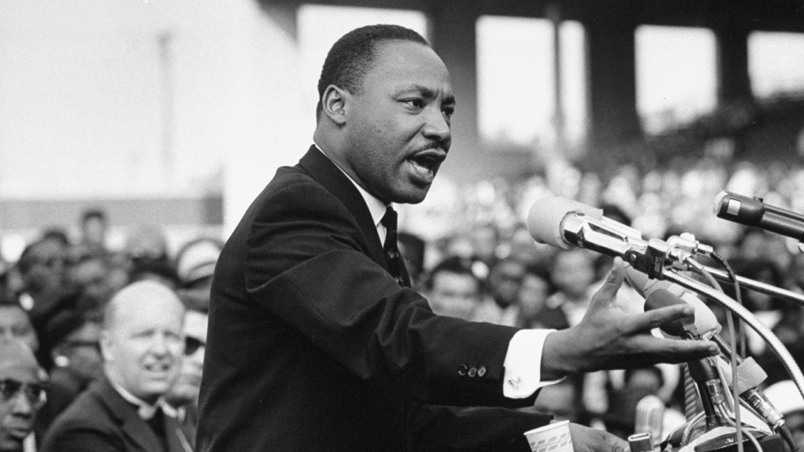

Martin Luther King Jr.

A figurehead in the Civil Rights Movement from 1955-1968
Major King Events Chronology: 1929-1968
- 1929 - Michael King, later known as Martin Luther King, Jr., is born at 501 Auburn Ave. in Atlanta, Georgia.
- 1944 - King begins his freshman year at Morehouse College in Atlanta.
- 1951 - King graduates from Crozer with a bachelor of divinity degree, delivering the valedictory address at commencement.
- 1955 - King is awarded his doctorate in systematic theology from Boston University
- 1955 - Rosa Parks is arrested for refusing to vacate her seat and move to the rear of a city bus in Montgomery to make way for a white passenger.
- 1963 - King delivers his "I Have a Dream" speech. After the march, King and other civil rights leaders meet with President John F. Kennedy and Vice-President Lyndon B. Johnson in the White House.
- 1965 - King publicly opposes the Vietnam War at a mass rally at the Ninth Annual Convention of SCLC in Birmingham.
- 1968 - King is shot and killed while standing on the balcony of the Lorraine Motel in Memphis.